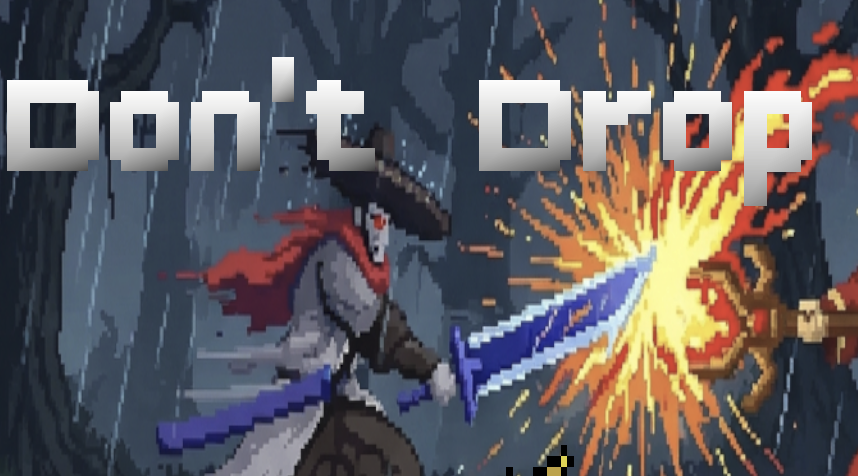
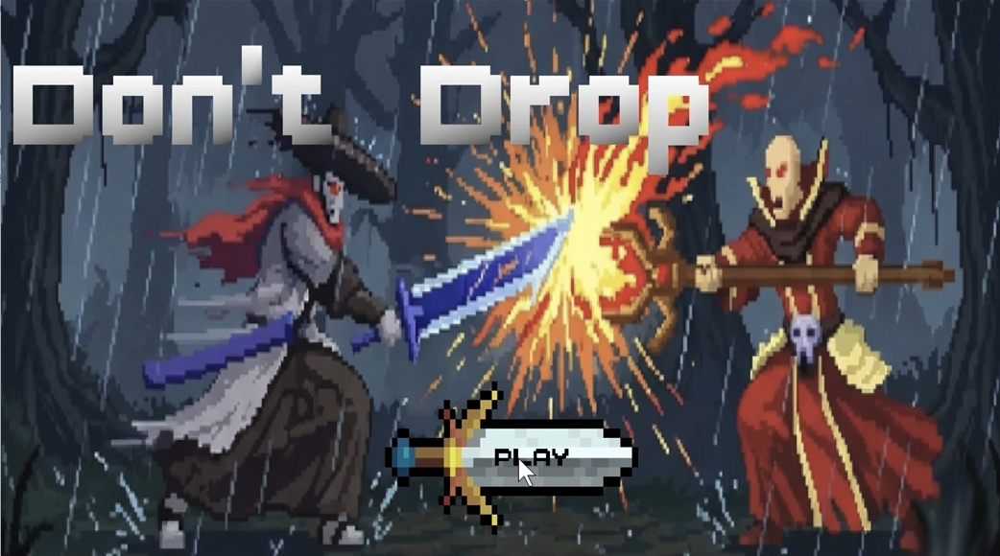
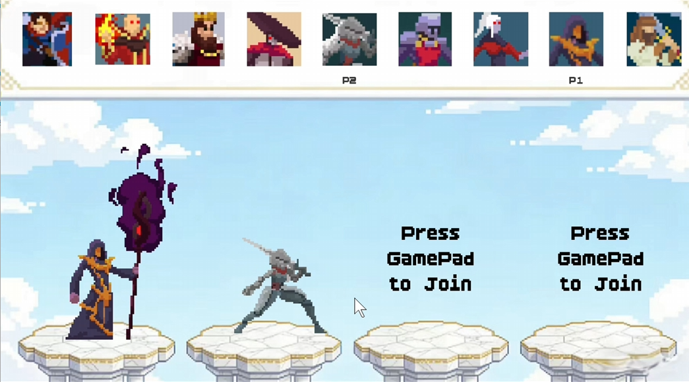
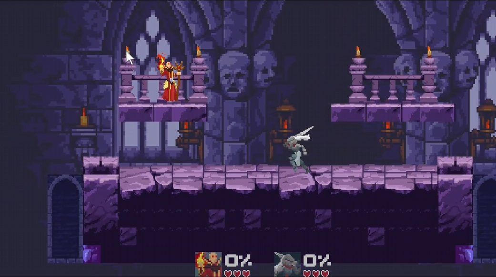
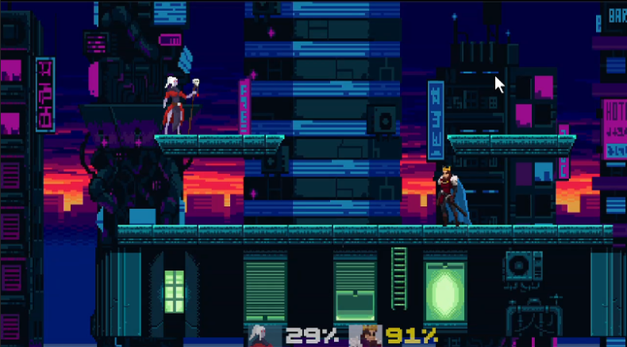
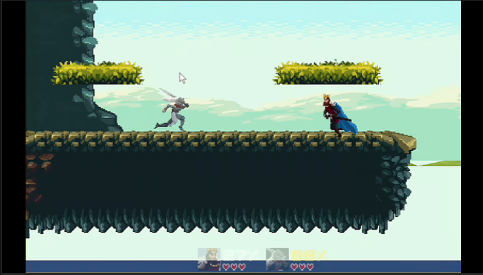

|

Developers
Zhang Jianyuan（张健源）from XJTU
Wang Yijia（王议甲）from XJTU
Liu Yuanhao（刘远浩）from XJTU
Li Xinze（李欣泽）from XJTU
|
Don't Drop
Game Introduction
Don't Drop! is a casual multiplayer party fighting game designed for fast-paced and entertaining local battles.
Players compete on floating platforms and must try to knock their opponents off the stage in order to win.
Each player starts with 3 lives, and the last player standing becomes the winner of the match.
The game is easy to learn and accessible for new players, while still offering exciting moments of competition and reversal.
During battle, players can move, jump, attack, and make use of special items such as speed boosts, shields, and swords.
These items add unpredictability to each round and create more dynamic interactions between players.
With its simple controls, quick match rhythm, and lively combat design, Don't Drop! is especially suitable for friends playing together in the same space.
It aims to deliver a fun and lighthearted party game experience where every round is short, intense, and full of surprises.
游戏介绍
《Don't Drop》是一款轻松有趣的多人派对对战游戏，强调本地多人同屏下的快速对抗与娱乐体验。
玩家将在悬浮平台上展开战斗，通过移动、跳跃与攻击，将对手击落平台来取得优势。
每位玩家初始拥有3条生命，当其他对手生命耗尽后，坚持到最后的玩家即可获得胜利。
本游戏操作方式直观，上手门槛较低，即使是第一次接触的玩家也能迅速理解玩法并投入对局。
在战斗过程中，玩家不仅可以进行基础移动与攻击，还可以使用加速、护盾、剑等道具来改变局势。
道具机制增强了战斗过程中的随机性与趣味性，使每一局对战都更具变化与逆转感。
凭借简洁明快的操作、紧凑的对局节奏以及富有互动性的战斗设计，《Don't Drop》适合朋友之间进行休闲竞技与聚会娱乐。
我们希望通过这款游戏，带来一种易于参与、节奏紧凑、过程充满欢乐与悬念的派对游戏体验。
Game Pitch
Click to Play





|